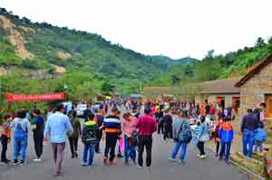

七峰山生旅游区近期活动返回>>
- 十一期间七峰山生态旅游区喜迎各国游客！“方城旅游”走向世界不是梦。
- 2017年10月7日


因为即便是下雨，七峰山生态旅游区的景色也不会让游客失望。 雨中漫步七峰，反而别有一番韵味。
七峰山生态旅游区经过不断完善自己的软硬件设施，提高各方面服务质量，丰富各种游玩项目内容，游客们口碑更是越来越好。当然啦，景区的颜值也是越来越高。 这不，今年十一期间，除了持续高涨的游客量，外国友人也纷纷到访七峰山生态旅游区进行旅游观光。据了解，这些慕名来七峰山的歪果仁小伙伴们有自驾游来的，有跟随旅行社组团来的，有带了中国朋友当翻译来的......
而且，这些外国友人非常活泼开朗，看到有工作人员拍照，非常热情大方地打招呼，镜头感很强啊有木有。
近年来，方城县旅游业在县委、县政府以及各相关单位的大力支持与正确领导下，得到了迅猛、良好的发展，一举成为南阳市旅游强县，更是成为了县域经济新的增长点。方城县委、县政府力践“县域景区化，景区全域化”的理念，把方城的山水文脉、旅游景点、人文历史、休闲养生、生态农业、循环经济发展有机融合，促进经济发展有机整合，带动经济社会全面发展，让方城旅游跳出全省、面向全国、走向世界！
今天在小编看来，我们或许已经踏出了走向世界的第一小步。
国家4A级景区—— 七峰山生态旅游区作为方城县旅游业的龙头企业，将会继续以饱满的热情、昂扬的姿态、稳健的步伐为全县旅游业发展、全县经济发展、提高方城知名度、带动全县人民就业贡献出自己的绵薄之力。